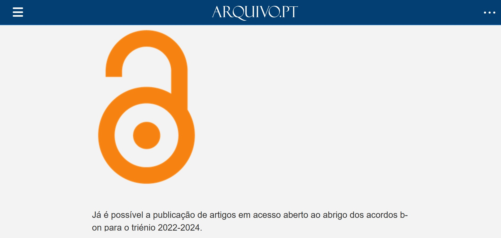

-
2004
No dia 19 de Abril, o Primeiro-Ministro apresentou a b-on Biblioteca do Conhecimento Online, um portal com um motor de pesquisa que permite aos investigadores portugueses efectuar pesquisas simultâneas em mais de 3500 revistas científicas e ler o texto integral dos artigos encontrados.
Outras memórias
○ Portal da Biblioteca Científica Digital facilita acesso a conhecimento online. (Notícia no portal Casa dos Bits, 19-04-2004, Portal Sapo Tek)
○ 2001 (Pré b-on)- Acesso à Web of Knowledge, através da Rede Ciência, Tecnologia e Sociedade (RCTS) com apoio financeiro do Programa Operacional Sociedade da Informação (POSI).
○ 2004 (Pré b-on)- Primeiros conteúdos - Negociação e disponibilização do acesso a 6 editores: Elsevier, IEEE, Sage, Springer, Kluwer, Wiley, num total de cerca de 3.500 títulos.
○ 2004 (Pré b-on) - Pesquisa federada - Disponibilização do 1.º sistema de pesquisa - versão inicial do Metalib da ExLibris.
-
2005
12.588 revistas disponíveis na internet em 63 instituições académicas e de Investigação - Biblioteca do Conhecimento Online quadriplica número de revistas científicas. (Comunicado, 16-02-2005. Site do MCTES)
Outras memórias
○ A b-on vai passar a ter mais de 12 mil revistas. (Notícia no Público de 12-02-2005, pág. 33. Site da b-on) -
2006
A 1 de Maio de 2006 foi publicada a primeira Newsletter da b-on que pretende estabelecer uma melhor comunicação com a comunidade. (Site da b-on)
Outras memórias
○ Biblioteca Nacional Digital acessível a partir da b-on. (Destaques. Site da b-on)
○ Cyber-Rally b-on.(Destaques. Site da b-on) (Notícia sobre os vencedores.)
○ Lançamento de materiais de suporte à pesquisa e acesso (ex. manual do utilizador). (Informações. Site da b-on)
○ Pesquisa de periódicos AtoZ (Site da b-on) -
2007
Em 2007 o MCTES passa a suportar 100% dos custos das instituições do ensino superior público, mantendo o co-financiamento de cerca de 50% para as restantes instituições que já eram membros da b-on em 2006. (Como aderir - Custos. Site da b-on)
-
2008
O seu crescimento tem sido uma constante sobretudo ao nível do número de conteúdos disponibilizados, o que tem contribuído para o aumento do número de donwloads que foi superior aos 4.300.000 em 2007. (Notícia. Site da b-on)
Outras memórias
○ Página de Perguntas Frequentes. (FAQ. Site da b-on)
○ Mudanças no portal da b-on: organização dos conteúdos por conjuntos temáticos. (Notícia. Site da b-on) -
2009
Na página de entrada destacamos a secção "A b-on para…" que se destina a diferentes perfis de utilizadores: estudantes, professores, investigadores, profissionais de saúde, bibliotecários. (A b-on para... Site da b-on)
Outras memórias
○ Disponibilizado novo portal da b-on. (Notícia Portal do Governo, 11-08-2009)
○ Site da b-on cumpre as directrizes de acessibilidade do W3C. (Notícia no site Plano Tecnológico, 12-08-2009)
○ B-on já é um site acessível. (Notícia Casa dos Bits, 12-09-2009, Portal Sapo Tek)
-
2010
Foram apresentadas duas listas de títulos relativas ao triénio de 2010 a 2012 sendo periodicamente actualizadas com informação enviada pelos diversos editores. (Pacotes. Site da b-on.)
-
2011
Em 2011 novos desafios se colocam com a produção de novos materiais com recursos a novas tecnologias como o Colibri e o Educast permitindo a formação online e à distância. (Formação, e-learning. Site da b-on)
-
2012
Os dados estatísticos publicados no site desde 2007 mostram o crescimento da b-on, nomeadamente, de utilização, tipos de utilizadores e número de downloads. (Boletim Estatítico. Site da b-on)
-
2013
O serviço Mobilidade B-on permite aos utilizadores acederem aos conteúdos independentemente do lugar onde se encontram. O acesso à b-on passa a ser baseado em credenciais. (Serviços. Site da b-on)
Outras memórias
○ Tutorial sobre o serviço Mobilidade b-on (Vídeo. Canal Educast)
○ Serviço de Preservação da b-on através da participação no Pórtico (JSTOR). (Serviços. Site da b-on)
-
2014
O site comemorativo do 10º aniversário destaca iniciativas e marcos da evolução da b-on. Infelizmente, não foi possível preservar a maior parte das imagens que ilustravam a viagem no tempo em 2014. (Site comemorativo)
Outras memórias
○ Concurso para novo slogan da b-on. (Site da b-on, em PDF) -
2015
O novo site apresenta alterações no aspeto gráfico e no serviço de pesquisa. Pode ler-se: "Esperamos que esta mudança contribua para melhorar o acesso à informação científica por parte dos nossos utilizadores. Será possível continuar a utilizar o anterior sistema de pesquisa até ao final do mês de Outubro." (Site da b-on)
Outras memórias
○ Membros da b-on em 2015. (Site da b-on)
-
2016
-
2017
Período-prova de recursos de pesquisa nas áreas da saúde oferecido pela Dot.lib aos membros do consórcio b-on. (Notícias. Site da b-on)
Outras memórias
○ Trial dos recursos da Proquest. (Site da Proquest)
○ Trial dos recursos da BMJ (Notícias. Site da b-on)
-
2018
Listas de títulos relativas ao triénio de 2016-18. Estas são periodicamente actualizadas com informação enviada pelos diversos editores. (Site da b-on)
-
2019
Com vista a maximizar o acesso aberto a b-on negociou com diversos editores condições mais favoráveis à publicação em acesso aberto por parte de autores de instituições b-on, tais como períodos de embargo, descontos em APCs (article processing charge) e isenções. (Acesso aberto, em destaque também nos links do rodapé)
-
2020
No contexto da pandemia, muitos editores disponibilizaram em acesso aberto conteúdos/coleções, sobretudo na área da virologia e da COVID-19. A b-on promoveu o acesso a essas publicações. (Destaques. Site da b-on)
-
2021
“The Past Web – Exploring Web Archives” esteve disponível para consulta através da b-on. O livro, da editora Springer-Nature, teve como editor principal o Daniel Gomes, coordenador do Arquivo.pt e inclui informação prática sobre arquivos web, fornecendo exemplos inspiradores e partilha de resultados recentes sobre métodos de acesso para utilização de informação preservada. (Notícia. Site da b-on)
-
2022
Já é possível a publicação de artigos em acesso aberto ao abrigo dos acordos b-on para o triénio 2022-2024. (Notícias. Site da b-on) Em 2022, foram negociadas condições favoráveis de publicação em acesso aberto com nove dos editores presentes na b-on. Em 2023, prosseguiram as negociações totalizando treze editores.
 -
2023
Em novembro, a b-on organizou duas sessões online para os utilizadores e autores de artigos científicos. A primeira entitulou-se "Acesso a conteúdos" e a segunda "Publicação em acesso aberto e retenção de direitos" (Notícias. Site da b-on)
-
2024
20º aniversário da b-on - Biblioteca do Conhecimento Online. (Site da b-on)